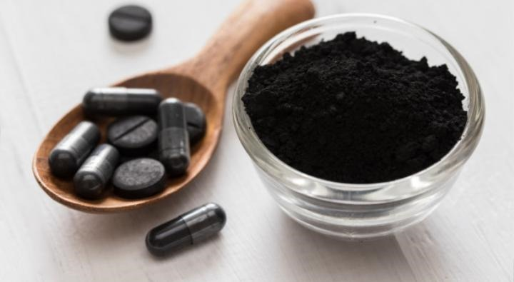

La empresa inicia en el año 2,015, derivada de la historia de vida de un campesino que laboraba bajo condiciones climáticas sin el
cuidado necesario de su cuerpo y salud, teniendo como consecuencia: Deshidratación, enfermedades en la piel, infecciones en su
sistema digestivo y demás órganos; tomo la decisión de empezar a implementar la rutna diaria de elementos daturales como
alimentos ricos en vitaminas y minerales que aportarían el cuidado de su organismo y de su piel. El ser humano ha buscado siempre
el cuidado y belleza pesonal como forma de sentirse bien consigo mismo. Al obtener resultados evidenciales y positivos, decide
crear su propia empresa que instruya en hábitos alimenticios, nutra y cuide su salud. Su emprendimiento trajo como beneficio el
anunciar a otros compañeros interesados en formar parte lo que se estaba aconteciendo y así generar ganacias.
Crema de Sábila
Es una planta de diferentes productos de belleza, lo sonsumen por sus altos beneficios
y nosotros tenemos la solución para el buen cuidado de tu piel.

Mascarilla de Carbón
Las mascarillas de carbón desintoxican tu piel gracias a sus elementos activos, los cuales
limpian, desinfectan y actuan contras las bacterias de la piel.
INFORMACIÓN QUE NECESITA SABER
Excelente Producto
Nuestros productos están probados en diferentes tipos de piel, en donde
pudimos comprobar que a la mayoría de personas obtuvieron resultados positivos.
Programa de Entregas
Contamos con un programa detallado, donde nos aseguramos que los productos
sean entregados en el tiempo o fecha acordada.
Puedes Contactarnos
Puedes ponerte en contacto con nosotros en nuestros distintos medios
de interacción como:
Nuestra Página Web
Nuestras Líneas Telefónicas
Facebook
Twitter
WhatsApp
Instagram
MENCIONES
Nidia Santizo
Es excelente llevo 1 semana utilizando la mascarilla de sábila y al instante se ven los resultados
ahora tengo un cutis más saludable he hidratado, mi piel es muy sensible al sol y esto hace que me
salgan manchitas en mi rostro pero utilizo la mascarilla y las elimina por completo, me encanta!! Se las recomiendo.
Suceli Pérez
He probado muchas mascarillas para las manchas en mi rostro y ninguna me ha dado
tan buenos resultados como la mascarilla de sábila, vi resultados en tan poco tiempo,
mi piel además de estar super suave está libre de impurezas y las manchas han desaparecido,
se las súper recomiendo!! Es buenísima y super accesible!!
Erick Bautista
Me ha ayudado mucho para las partes grasas de mi rostro y los puntos negros esta mascarilla
hace que los granitos o puntos me broten con más facilidad y me queda una piel más limpia y más
fresca, he obtenido mejores resultados aplicando agua tibia en la zona a aplicar, esto hace que al
momento de retirar la mascarilla los puntos o granitos salgan con más facilidad, me encanta esta mascarilla
mi mejor aliada para la limpieza de mi rostro, muy buena y recomendada.
Hector Marroquín
Como hombre también me gusta mucho cuidarme el rostro, a veces me salen granitos y puntos negros,
esta mascarilla me ayuda a retirarlos y hace que mi rostro de vea más limpio, muy buena la mascarilla,
se las recomiendo!!